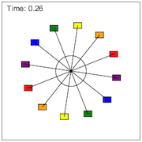

This model expands upon the concepts introduced in illustration 5.4. Students are shown an animation of a rotating ferris wheel, and must consider the forces at various points along the motion. Even though a rider may be at a different positon, the result is still the same: the net force is towards the center with magnitude m v2 / r.